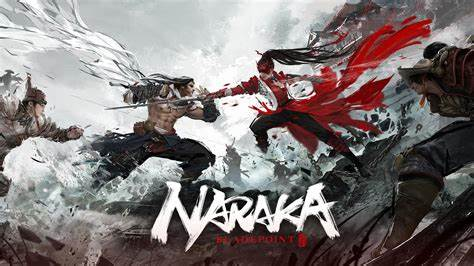

A Naraka: Bladepoint egy többjátékos online csatamező (MOBA) és battle royale elemeket ötvöző videojáték, amelyet a 24 Entertainment fejlesztett és a NetEase Games adott ki. A játék hivatalosan 2021. augusztus 12-én jelent meg Microsoft Windows platformon. A Naraka: Bladepoint egyedülálló harcrendszerrel, parkour mechanikával és keleti mitológiával átszőtt világával tűnik ki a hasonló játékok közül.
A Naraka: Bladepoint alapvetően egy battle royale játék, ahol a játékosok egy nagy térképen küzdenek egymással, hogy a végső győztesként kerüljenek ki. A játékban akár 60 játékos is részt vehet egy-egy mérkőzésen, akik különböző hősöket irányítanak, mindegyik saját egyedi képességekkel és harci stílusokkal rendelkezik. A játékmenet kulcselemei a következők:
A Naraka: Bladepoint több hőst (hero) kínál, mindegyik saját egyedi képességekkel és végső támadásokkal (ultimates) rendelkezik. A karakterek különböző szerepeket töltenek be, és különböző harci stílusokat képviselnek:
A játék különböző típusú fegyvereket kínál, amelyek mindegyike saját egyedi támadási mintázattal és képességekkel rendelkezik. A fegyvereket a játék során található ládákból, boltokból és legyőzött ellenfelektől lehet megszerezni. A fegyverek közé tartoznak:
A játékosok különböző páncélokat és erőforrásokat gyűjthetnek, amelyek növelik a túlélési esélyeiket. Ezek közé tartoznak a páncélok, amelyek extra védelmet biztosítanak, valamint a gyógyító és erősítő tárgyak, amelyek különböző buffokat adnak.
A Naraka: Bladepoint különböző játékmódokat kínál, amelyek változatosságot és új kihívásokat biztosítanak a játékosok számára:
A Naraka: Bladepoint rendszeres eseményekkel és frissítésekkel tartja fenn a játékosok érdeklődését. Ezek az események gyakran új tartalmakat, hősöket, fegyvereket és játékmódokat hoznak a játékba. A fejlesztők aktívan figyelik a közösségi visszajelzéseket, és folyamatosan dolgoznak a játék egyensúlyán és teljesítményén.
A játék nagy hangsúlyt fektet a közösségi élményekre, lehetőséget biztosítva a játékosok számára, hogy csapatokat alkossanak, közösen harcoljanak és kommunikáljanak. A játék támogatja a hangalapú és szöveges csevegést, valamint különféle közösségi funkciókat, mint például a barátlisták és a klánok.
A Naraka: Bladepoint modern grafikai megjelenítést és optimalizációt kínál, amely lehetővé teszi a sima és látványos játékmenetet. A játék motorja támogatja a valós idejű árnyékokat, dinamikus világítást és részletes környezeteket, amelyek mind hozzájárulnak a lenyűgöző vizuális élményhez.
A Naraka: Bladepoint ingyenesen játszható, de tartalmaz mikrotranzakciós rendszert, ahol a játékosok valódi pénzért vásárolhatnak kozmetikai elemeket, mint például karakter- és fegyverkinézeteket, valamint egyéb testreszabási lehetőségeket. Ezek a vásárlások nem befolyásolják a játékmenetet, csupán esztétikai változtatásokat jelentenek.
A Naraka: Bladepoint egy izgalmas és dinamikus battle royale játék, amely egyedi harcrendszerével, parkour mechanikájával és keleti mitológiával átszőtt világával tűnik ki. A különböző hősök és fegyverek széles választéka, a változatos játékmódok és a rendszeres események mind hozzájárulnak ahhoz, hogy a játék folyamatosan friss és vonzó maradjon. Az aktív közösségi elemek és a fejlesztők elkötelezettsége a játékosok visszajelzéseinek figyelemmel kísérése iránt biztosítják, hogy a Naraka: Bladepoint hosszú távon is népszerű és szórakoztató maradjon.
